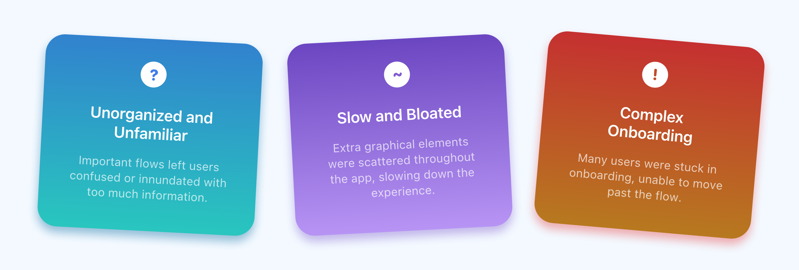
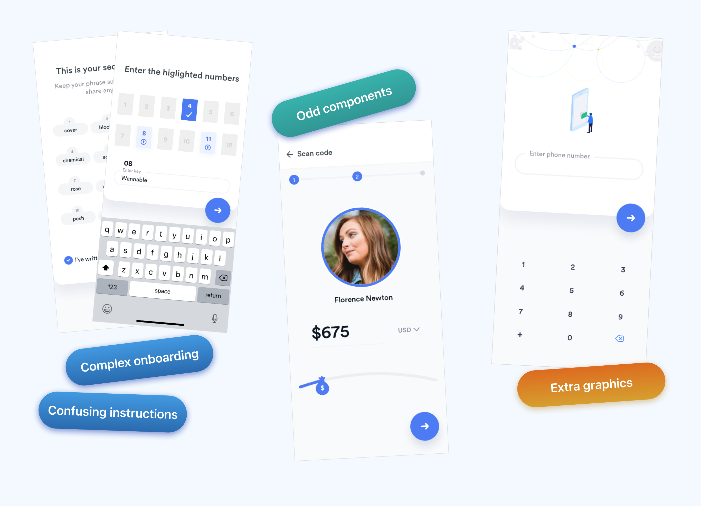
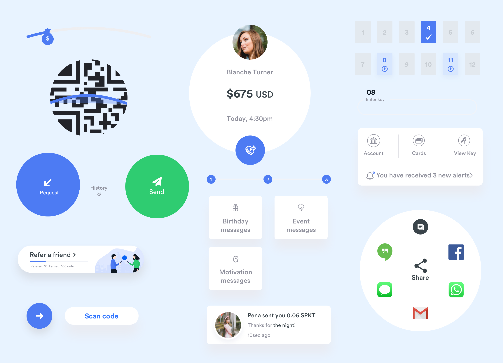
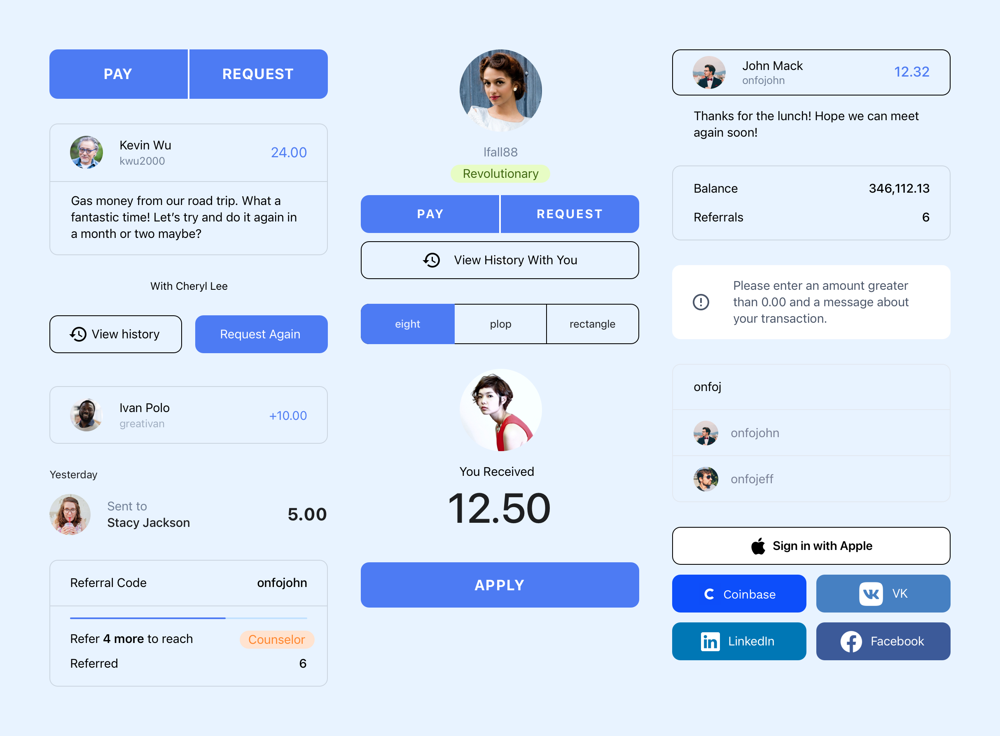
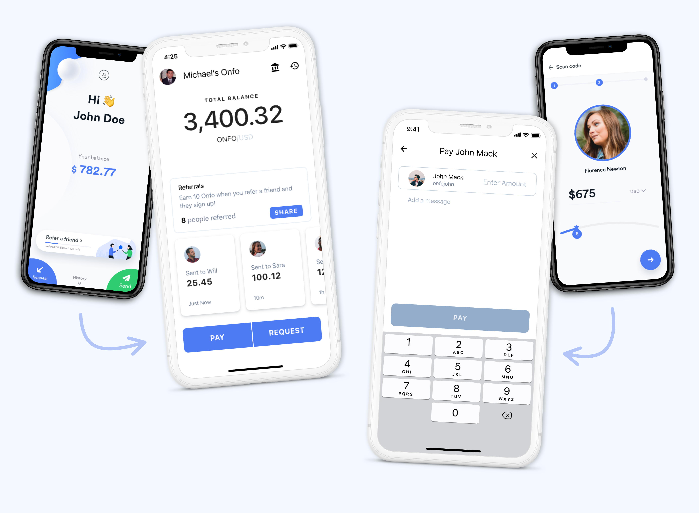
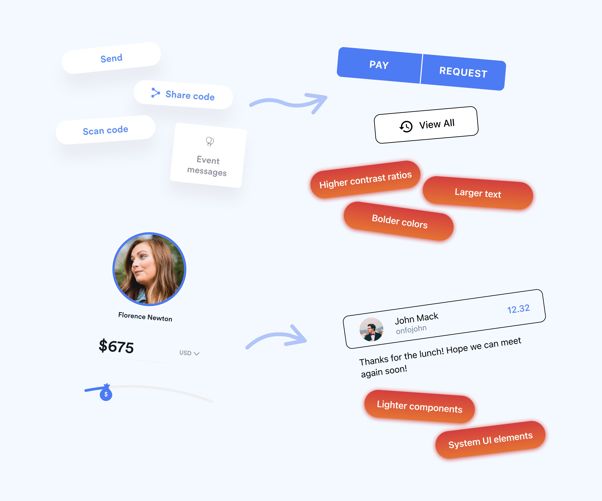
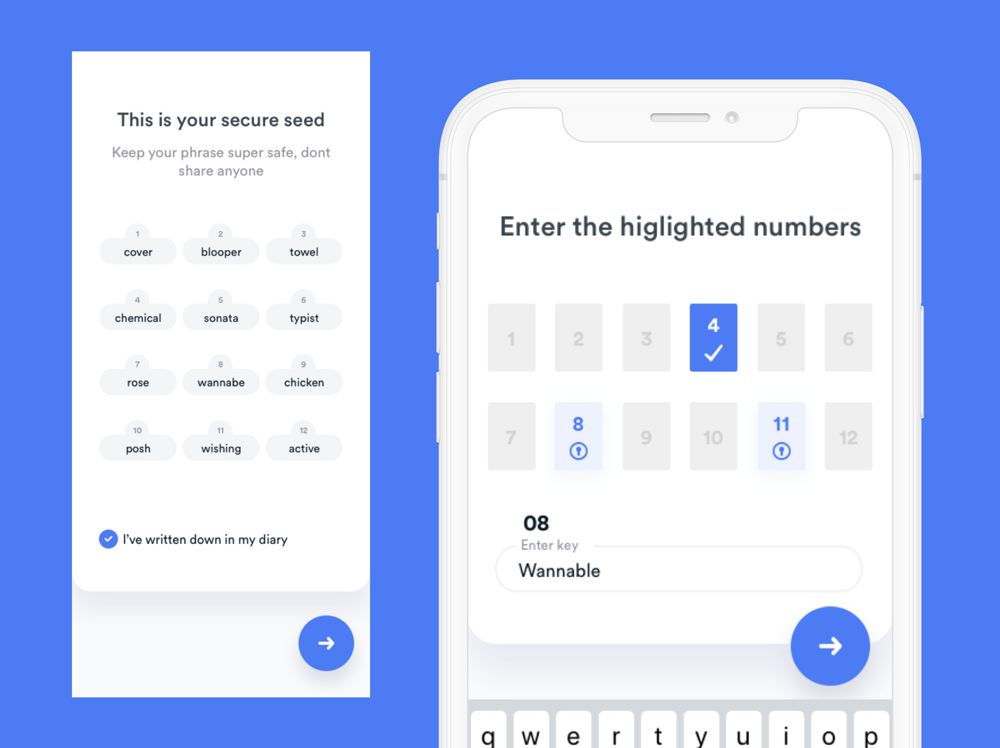
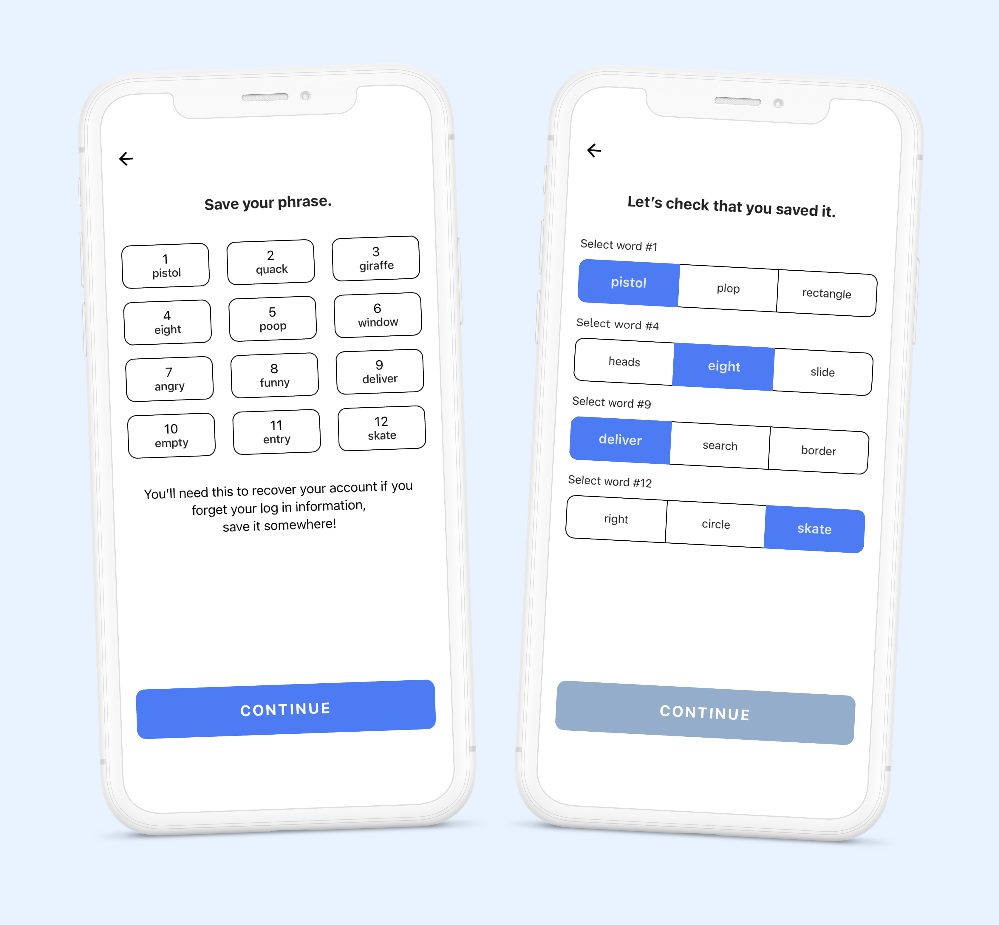
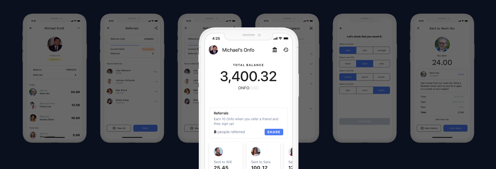

About the Project
Onfo is a referral-based cryptucurrency that strips crypto of the things that make it complicated. It's as easy to understand as Venmo: each user joins for free and earns Onfo which can be sent and received in a secure network. After launching in January 2019, Onfo quickly gained over 80,000 sign-ups and was resonating with the unbanked in developing countries. Despite Onfo's fast growth, users weren't resonating well with the Onfo mobile app as much as they were with the idea of Onfo. To remedy this, I led a redesign of the mobile experience.
Duration
June 2019 - July 2019
Role & Team
Sole Designer (Me), Two Developers, Remote Front-End Team, Product Team and Founders
Process
Research, Interviews, Visual/Interaction Design
The Problem
Many of our users were having trouble completing basic flows in the previous Onfo mobile app, hindering our simple and fast idealogy. On top of this, extra graphical elements, features, and interactions were leading to longer load times, non-ideal for users in developing countries with slower 4G connections.
The Solution
Improving the mobile app meant ensuring that users in the most common demographics—those with older devices, slower internet connections, and looser understandings of crypto—had fluid experiences that made sense to them. To push a fast and fluid experience, I strived to make the app feel familiar, creater a leaner design for a faster loading app, and simplify flows and elements that were necessarily technical.
The Research and Findings
To dive deeper than the general sentiments, I took to user interviews and testing sessions to understand the root of the problems. As most of our users were situated in different countries, spoke different languages, and lived in various time zones, I had to resort to a variety of outlets to communicate effectively including: remote calls, Onfo's Zendesk, and local users that best-fit the target audience. After finishing research, I discovered that most user issues fit under three main areas:
Along with identifying the main problem areas, I went through every screen in the existing mobile application and documented problem screens that fit with the problem areas.
The Goals
It was clear our users expected the app to match the simplicity, security, and speed that Onfo's vision promised. From this, it was clear that I needed to answer three questions:
How can we make the app feel familiar?
Revist the core flows of the app and rewrite/rework their flows with users, audit all of the components used in the app and simplify the complex or extravagant elements.
How can we make the experience feel faster?
Make the visual identity leaner by redesigning components more similar to other payments app, and reducing the amount of extra graphical elements.
How can we ease the onboarding process?
Restructure the security portions of the onboarding flow to be easier to understand, and frequently test with users.
1. How can we make the app feel familiar?
Creating a familiar environment meant revisiting the app's core flows and re-building them to better replicate experiences in other common payment services. It was clear from multiple user-testing sessions that most of the confusion was due to a lack of familiar components. To better visualize the problem, I audited every major component and narrowed the scope of the project to focus on those that were confusing rather than redesign every component and every flow.
Diagramming the app's core flows allowed me to see most problem areas and eventually reach the conclusion that a more familiar app meant simplifying flows to contain less branch-offs and more direct logic. When refining the most heavily visited screens like a user's recent transactions, referral history, or the pay/request flow, I shied away from complex solutions, instead sticking to more common layouts. These more basic solutions allowed me to explore how smaller elements can improve reliability, and eventually reach a new, more familiar set of components:
The Outcomes
After undergoing design reviews of most important components, I was able to construct more brief and clear app flows that resonated more with our relatively unexperienced user base.
Designing with familiarity in mind resulted in flows with lighter but clearer interactions, much greater scannability, and improved our users' speed when moving through actions such as sending Onfo to another user.
Achieving a more understandable design required deep dives into the variety of user personas across our platform.
Onfo was meant to be able to be used by anyone, anywhere; as a result, there were tons of different environmental and emotional contexts to consider.
A familiar design meant finding an experience that worked in most of these contexts, which ultimately was done through simplification.
2. How can we make the experience feel faster?
At heart, Onfo was a payments app, not a cryptocurrency portfolio or stock-trading app. However, our current design didn't reflect this idea, instead opting to push our app into the realm of a playful social experience which wasn't resonating well with users. In addition, the wealth of extra graphical elements and components was putting a heavier load on our app, causing it to feel bloated. This presented huge problems for users with slower phones and 4G connections.
Developer collaboration was at the heart of speed improvements. While I knew that extra graphical elements were bloating the experience, much of the app's actual speed depended more on its development. Interfacing with developers about component design and the animations was important in developing an app that not only felt fast but was more efficient on paper. Deciding to use the system font, rather than Circular Std., along with reducing extra effects on components, contributed towards reducing the app's size and load times.
The Outcomes
When redesigning components and simplifying Onfo's visual style, I wanted to ensure that the removal of extra graphical elements and simplification of the design did not hinder user understanding. This pushed me to put a greater focus on visual contrast and how I could apply color to guide action. Ultimately, I settled on using Material Design components as a base, modifying them—and in some instances creating new components—to fit Onfo's style. What Material's system lacked in playfulness, it made up for in clarity. In addition, the Material components were extremely flexible on various screen sizes. Because of our target audience—the unbanked, who commonly used Android phones of various sizes—a flexible design system would make design and development much easier.
3. How can we ease the onboarding process?
Signing up for online financial services always comes with an extra degree of protection. For Onfo (and most other cryptocurrency services), the industry standard was to require users to save a 12-word phrase in order to secure their account. The onboarding problem was that our newers users were stuck in this phase of onboarding, often abandoning the sign-up process altogether when they couldn't complete this step:
After multiple user interviews, I discovered that the crux of the problem was layout. Because the 12-word screen shifts from 4x3 to 2x6, users weren't sure where to tap or type. In addition, many of them didn't understand the importance of saving their 12-word phrase, likely causing them to lose interest and abandon the flow altogther.
The Outcomes
Readjusting the layouts to be more similar and adding more concise and clear descriptions greatly improved the onboarding success rate. Most importantly, we adjusted the step to only ask for users to select their phrase's words from a list rather than type them in their respective box. This resonated extremely well as it removed the risk of users incorrectly typing words in their phrase, and was easier to understand amongst all demographics.
The End
Gaining Perspective
The Onfo redesign was an extensive project that tested my limits and self-confidence. Working on a project that had the potential to reach thousands of different users forced me to learn to communicate more effectively with team members, ask driven questions to collect useful user feedback, and consider how time and money contstraints affect the design process. Most importantly, I had to do deep dives into our diverse user base which gave me new perspectives on how people interact with money and technology in different countries, with different levels of economic freedom, tech-literacy, and environmental circumstances. Learning to step in the shoes of thousands of different users put me in unfamiliar and uncomfortable environments, and pushed me to abandon my assumptions and adapt and design with context in mind. The Onfo redesign has been one of the most meaningful projects I've had the pleasure of working on. It's given me the opportunity to learn more about myself and how design thinking trickles down into every aspect of life.

Read more about this project on Medium